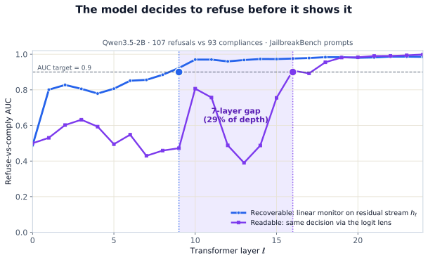
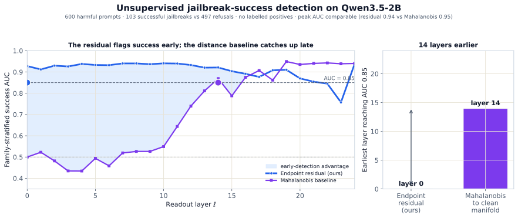
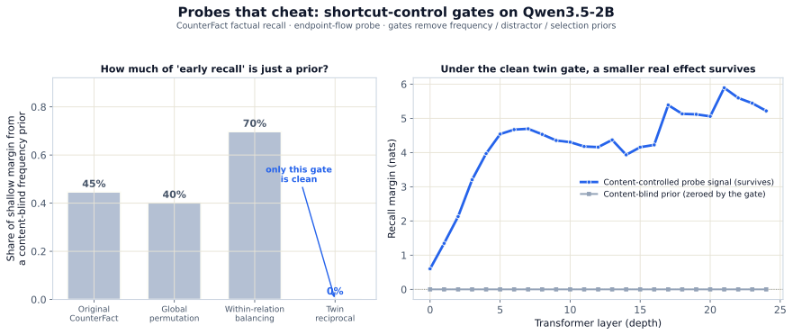

An endpoint-coordinate lens on transformers. A model decides before it speaks: read the
residual stream as a trajectory and you can watch a decision crystallize, layers
before it ever reaches the output.
June 2026 · experiments on Qwen3.5-2B
A language model builds its answer gradually, layer by layer. If you stop treating each
layer as a static snapshot and instead read the residual stream as a flow toward where it
is heading, one lens buys you three things: an early-warning jailbreak detector, an
honesty test for interpretability probes, and a clean picture of when a model
makes up its mind. Everything below is on a single open model,
Qwen3.5-2B.
Endpoint coordinates. The residual stream runs horizontally across layers. A single linear
endpoint probe at a middle layer ℓ* sends a dashed arch to the final node L,
predicting the model’s answer (blue star) several layers before that answer becomes readable from
the output (violet, at L).
Across layers: MLP refines in place, attention reads the sentence
Follow one token (the output position) as its residual is built across depth. Most steps
are MLP updates that refine that token in place: they reshape
it without getting much closer to the answer. The work of moving toward the answer is done by
attention, the one operation that reads from earlier tokens in the
sentence. In the staircase below, MLP steps move flat (a layer deeper, no closer) while each attention
step pulls in context from the sentence above (the blue arrows) and steps the residual down,
closer to the answer.
How one token’s residual reaches the answer (schematic). Reading left→right is depth;
reading top→bottom is distance to the answer. MLP sublayers (violet) move it flat,
a layer deeper without getting closer. Attention sublayers (blue) are the only steps that read the
earlier tokens of the sentence (top), and they step the residual down, closing the
distance until it lands on the answer.
That is the cartoon. Here is the real thing: ask Qwen3.5-2B the same kind of question many
ways (the capital of France, of Japan, of Egypt, of Brazil; eight countries in all) and
capture its last-token residual at every one of its 24 layers, then project the whole stack into 3D.
Color runs from the embedding (cyan) to the final layer (violet). Whether you reduce it linearly (PCA)
or nonlinearly (UMAP), the same picture holds: because the questions share a routine, their
trajectories run nearly on top of one another: the model is executing one
“look up the capital” computation regardless of which country you ask about.
Real Qwen3.5-2B residual-stream trajectories for eight country→capital prompts, one path per
prompt, colored by layer depth (cyan → violet). Drag to rotate, scroll to zoom,
click a prompt to isolate it. The paths nearly coincide: same relation, same routine.
Left: PCA on the unit-normalized states (linear). Right: UMAP
(nonlinear). Violet diamonds mark the final-layer endpoint each trajectory lands on. The UMAP
layout is illustrative, not metric: nonlinear embeddings can exaggerate structure, so the
quantitative claims below rest on the linear readouts, not on these geometries.
1. The model decides to refuse before it shows it
Give the model 200 harmful-and-benign prompts and let its own behavior label each one
refuse-vs-comply. A linear monitor reads that decision straight off the residual stream at
layer 9. The exact same decision only becomes visible through the
output (the logit lens1) at layer 16. The model commits, then
spends seven layers (nearly a third of its depth) getting around to saying it.

Refuse-vs-comply AUC by layer. Recoverable (blue), a linear read of the
residual stream, crosses 0.9 at layer 9; readable (violet), the same
decision via the logit lens, only catches up at layer 16. The shaded band is the gap between
deciding and showing.
2. Catch a jailbreak before it lands
Train the endpoint reader on clean text only, then score how far a live activation is from where
the model “should” have ended up. That reconstruction residual flags successful
jailbreaks6 from layer 0 at ~0.93 AUC, with no labelled
jailbreak examples. The standard distance baseline (Mahalanobis to the clean manifold) sits at
chance until the final third of the network and reaches the same bar
~14 layers later. Peak accuracy ends up comparable; the advantage is
timing: early enough to abort generation before the harmful span is produced.

Family-stratified jailbreak-success AUC. The endpoint residual (blue) is informative from the
first layer; Mahalanobis (violet) only reaches AUC 0.85 by layer 14. Same ceiling, far earlier
warning, on 600 prompts with no labelled positives.
3. Your interpretability probe is probably cheating
A probe that looks like it reads “early factual recall” can simply be riding a
token-frequency shortcut. Measured against a content-blind control on the CounterFact benchmark5,
40–70% of the shallow signal is prior, not retrieval. Only a
twin-reciprocal balancing gate drives that to exactly zero,
and a smaller, genuine signal survives underneath it. The most useful thing a probing pipeline can
ship is not the probe; it’s the gate that tells you when the probe started doing the task itself.

Left: share of the shallow signal explained by a content-blind prior across four
gates; only the twin-reciprocal gate (blue) is clean. Right: under that
clean gate, a genuine retrieval signal still rises with depth while the prior stays pinned at zero.
The common thread. Read a transformer in endpoint coordinates (where
the computation is heading, not just where it is) and a decision becomes legible long before
the model speaks it. That single move is what powers all three results: the refusal gap, the
early jailbreak alarm, and the probe-honesty gate.
What this is, and what it isn’t
This is a small, deliberately honest diagnostic toolkit, not a claim that transformers
“are” diffusion models: the flow framing is a coordinate choice. Results are on one
model and should be read as such. The depth dynamics echo concurrent work on block-recurrent vision
transformers3; the depth readout is kin to the tuned lens2; the on-manifold-vs-off-manifold intuition
is shared with recent manifold-steering work4. What I think holds up as genuinely useful is the
discipline: reading computation in flight, and shipping the controls that say when a readout
is fooling you.